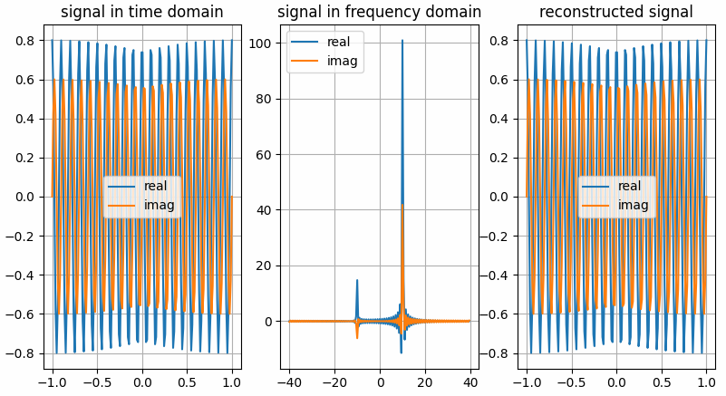
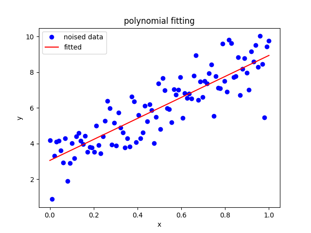

torchbox.dsp package
Submodules
torchbox.dsp.convolution module
- torchbox.dsp.convolution.cutfftconv1(y, nfft, Nx, Nh, shape='same', dim=0, ftshift=False)
Throwaway boundary elements to get convolution results.
Throwaway boundary elements to get convolution results.
- Parameters:
y (Tensor) – array after
iff.nfft (int) – number of fft points.
Nx (int) – signal length
Nh (int) – filter length
shape (str) – output shape: 1.
'same' --> same size as input x, \(N_x\) 2.'valid' --> valid convolution output3.'full' --> full convolution output, \(N_x+N_h-1\) (the default is ‘same’)dim (int) – convolution dimension (the default is 0)
ftshift (bool) – whether to shift zero the frequency to center (the default is False)
- Returns:
y – array with shape specified by
same.- Return type:
Tensor
- torchbox.dsp.convolution.fftconv1(x, h, shape='same', nfft=None, ftshift=False, eps=None, **kwargs)
Convolution using Fast Fourier Transformation
Convolution using Fast Fourier Transformation.
- Parameters:
x (Tensor) – data to be convolved.
h (Tensor) – filter array
shape (str, optional) – output shape: 1.
'same' --> same size as input x, \(N_x\) 2.'valid' --> valid convolution output3.'full' --> full convolution output, \(N_x+N_h-1\) (the default is ‘same’)cdim (int or None) – If
xis complex-valued,cdimis ignored. Ifxis real-valued andcdimis integer thenxwill be treated as complex-valued, in this case,cdimspecifies the complex dim; otherwise (None),xwill be treated as real-valued.dim (int, optional) – axis of fft operation (the default is 0, which means the first dimension)
nfft (int, optional) – number of fft points (the default is \(2^{nextpow2(N_x+N_h-1)}\)), note that
nfftcan not be smaller than \(N_x+N_h-1\).ftshift (bool, optional) – whether shift frequencies (the default is False)
eps (None or float, optional) – x[abs(x)<eps] = 0 (the default is None, does nothing)
- Returns:
y – Convolution result array.
- Return type:
Tensor
torchbox.dsp.correlation module
- torchbox.dsp.correlation.accc(Sr, isplot=False)
Average cross correlation coefficient
Average cross correlation coefficient (ACCC)
\[\overline{C(\eta)}=\sum_{\eta} s^{*}(\eta) s(\eta+\Delta \eta) \]where, \(\eta, \Delta \eta\) are azimuth time and it’s increment.
- Parameters:
Sr (numpy array) – SAR raw signal data \(N_a×N_r\) or range compressed data.
- Returns:
ACCC in each range cell.
- Return type:
1d array
- torchbox.dsp.correlation.acorr(x, P, dim=0, scale=None)
computes auto-correlation using fft
- torchbox.dsp.correlation.cutfftcorr1(y, nfft, Nx, Nh, shape='same', dim=0, ftshift=False)
Throwaway boundary elements to get correlation results.
Throwaway boundary elements to get correlation results.
- Parameters:
y (Tensor) – array after
iff.nfft (int) – number of fft points.
Nx (int) – signal length
Nh (int) – filter length
shape (dstr) – output shape: 1.
'same' --> same size as input x, \(N_x\) 2.'valid' --> valid correlation output3.'full' --> full correlation output, \(N_x+N_h-1\) (the default is ‘same’)dim (int) – correlation dim (the default is 0)
ftshift (bool) – whether to shift the frequencies (the default is False)
- Returns:
y – array with shape specified by
same.- Return type:
Tensor
- torchbox.dsp.correlation.fftcorr1(x, h, shape='same', nfft=None, ftshift=False, eps=None, **kwargs)
Correlation using Fast Fourier Transformation
Correlation using Fast Fourier Transformation.
- Parameters:
x (Tensor) – data to be convolved.
h (Tensor) – filter array, it will be expanded to the same dimensions of
xfirst.shape (dstr, optional) – output shape: 1.
'same' --> same size as input x, \(N_x\) 2.'valid' --> valid correlation output3.'full' --> full correlation output, \(N_x+N_h-1\) (the default is ‘same’)cdim (int or None) – If
xis complex-valued,cdimis ignored. Ifxis real-valued andcdimis integer thenxwill be treated as complex-valued, in this case,cdimspecifies the complex dim; otherwise (None),xwill be treated as real-valued.dim (int, optional) – axis of fft operation (the default is 0, which means the first dimension)
nfft (int, optional) – number of fft points (the default is None, \(2^{nextpow2(N_x+N_h-1)}\)), note that
nfftcan not be smaller than \(N_x+N_h-1\).ftshift (bool, optional) – whether shift frequencies (the default is False)
eps (None or float, optional) – x[abs(x)<eps] = 0 (the default is None, does nothing)
- Returns:
y – Correlation result array.
- Return type:
Tensor
- torchbox.dsp.correlation.xcorr(A, B, shape='same', dim=0)
Cross-correlation function estimates.
- Parameters:
A (numpy array) – data1
B (numpy array) – data2
mod (str, optional) –
‘biased’: scales the raw cross-correlation by 1/M.
’unbiased’: scales the raw correlation by 1/(M-abs(lags)).
- ’coeff’: normalizes the sequence so that the auto-correlations
at zero lag are identically 1.0.
’none’: no scaling (this is the default).
torchbox.dsp.ffts module
- torchbox.dsp.ffts.fft(x, n=None, norm='backward', shift=False, **kwargs)
FFT in torchbox
FFT in torchbox, both real and complex valued tensors are supported.
- Parameters:
x (Tensor) – When
xis complex, it can be either in real-representation format or complex-representation format.n (int, optional) – The number of fft points (the default is None –> equals to signal dimension)
norm (None or str, optional) – Normalization mode. For the forward transform (fft()), these correspond to: “forward” - normalize by
1/n; “backward” - no normalization (default); “ortho” - normalize by1/sqrt(n)(making the FFT orthonormal).shift (bool, optional) – shift the zero frequency to center (the default is False)
cdim (int or None) – If
xis complex-valued,cdimis ignored. Ifxis real-valued andcdimis integer thenxwill be treated as complex-valued, in this case,cdimspecifies the complex dimension; otherwise (None),xwill be treated as real-valued.dim (int, optional) – axis of fft operation (the default is 0, which means the first dimension)
- Returns:
y – fft results tensor with the same type as
x- Return type:
Tensor
- Raises:
ValueError – nfft is small than signal dimension.
:raises see also
ifft(),fftfreq(),freq().:Examples
The results shown in the above figure can be obtained by the following codes.
import torch as th import torchbox as tb import matplotlib.pyplot as plt shift = True frq = [10, 10] amp = [0.8, 0.6] Fs = 80 Ts = 2. Ns = int(Fs * Ts) t = th.linspace(-Ts / 2., Ts / 2., Ns).reshape(Ns, 1) f = tb.freq(Ns, Fs, shift=shift) f = tb.fftfreq(Ns, Fs, norm=False, shift=shift) # ---complex vector in real representation format x = amp[0] * th.cos(2. * th.pi * frq[0] * t) + 1j * amp[1] * th.sin(2. * th.pi * frq[1] * t) # ---do fft Xc = tb.fft(x, n=Ns, cdim=None, dim=0, shift=shift) # ~~~get real and imaginary part xreal = tb.real(x, cdim=None, keepdim=False) ximag = tb.imag(x, cdim=None, keepdim=False) Xreal = tb.real(Xc, cdim=None, keepdim=False) Ximag = tb.imag(Xc, cdim=None, keepdim=False) # ---do ifft x̂ = tb.ifft(Xc, n=Ns, cdim=None, dim=0, shift=shift) # ~~~get real and imaginary part x̂real = tb.real(x̂, cdim=None, keepdim=False) x̂imag = tb.imag(x̂, cdim=None, keepdim=False) plt.figure() plt.subplot(131) plt.grid() plt.plot(t, xreal) plt.plot(t, ximag) plt.legend(['real', 'imag']) plt.title('signal in time domain') plt.subplot(132) plt.grid() plt.plot(f, Xreal) plt.plot(f, Ximag) plt.legend(['real', 'imag']) plt.title('signal in frequency domain') plt.subplot(133) plt.grid() plt.plot(t, x̂real) plt.plot(t, x̂imag) plt.legend(['real', 'imag']) plt.title('reconstructed signal') plt.show() # ---complex vector in real representation format x = tb.c2r(x, cdim=-1) # ---do fft Xc = tb.fft(x, n=Ns, cdim=-1, dim=0, shift=shift) # ~~~get real and imaginary part xreal = tb.real(x, cdim=-1, keepdim=False) ximag = tb.imag(x, cdim=-1, keepdim=False) Xreal = tb.real(Xc, cdim=-1, keepdim=False) Ximag = tb.imag(Xc, cdim=-1, keepdim=False) # ---do ifft x̂ = tb.ifft(Xc, n=Ns, cdim=-1, dim=0, shift=shift) # ~~~get real and imaginary part x̂real = tb.real(x̂, cdim=-1, keepdim=False) x̂imag = tb.imag(x̂, cdim=-1, keepdim=False) plt.figure() plt.subplot(131) plt.grid() plt.plot(t, xreal) plt.plot(t, ximag) plt.legend(['real', 'imag']) plt.title('signal in time domain') plt.subplot(132) plt.grid() plt.plot(f, Xreal) plt.plot(f, Ximag) plt.legend(['real', 'imag']) plt.title('signal in frequency domain') plt.subplot(133) plt.grid() plt.plot(t, x̂real) plt.plot(t, x̂imag) plt.legend(['real', 'imag']) plt.title('reconstructed signal') plt.show()
{kind=link}
- torchbox.dsp.ffts.fftfreq(n, fs, norm=False, shift=False, dtype=torch.float32, device='cpu')
Return the Discrete Fourier Transform sample frequencies
Return the Discrete Fourier Transform sample frequencies.
Given a window length n and a sample rate fs, if shift is
True:f = [-n/2, ..., -1, 0, 1, ..., n/2-1] / (d*n) if n is even f = [-(n-1)/2, ..., -1, 0, 1, ..., (n-1)/2] / (d*n) if n is odd
Given a window length n and a sample rate fs, if shift is
False:f = [0, 1, ..., n/2-1, -n/2, ..., -1] / (d*n) if n is even f = [0, 1, ..., (n-1)/2, -(n-1)/2, ..., -1] / (d*n) if n is odd
If
normisTrue, \(d = 1\), else \(d = 1/f_s\).- Parameters:
- Returns:
Frequency array with size \(n×1\).
- Return type:
torch 1d-array
Examples
import torchbox as tb n = 10 print(np.fft.fftfreq(n, d=0.1), 'numpy') print(th.fft.fftfreq(n, d=0.1), 'torch') print(tb.fftfreq(n, fs=10., norm=False), 'fftfreq, norm=False, shift=False') print(tb.fftfreq(n, fs=10., norm=True), 'fftfreq, norm=True, shift=False') print(tb.fftfreq(n, fs=10., shift=True), 'fftfreq, norm=False, shift=True') print(tb.freq(n, fs=10., norm=False), 'freq, norm=False, shift=False') print(tb.freq(n, fs=10., norm=True), 'freq, norm=True, shift=False') print(tb.freq(n, fs=10., shift=True), 'freq, norm=False, shift=True') # ---output [ 0. 1. 2. 3. 4. -5. -4. -3. -2. -1.] numpy tensor([ 0., 1., 2., 3., 4., -5., -4., -3., -2., -1.]) torch tensor([ 0., 1., 2., 3., 4., -5., -4., -3., -2., -1.]) fftfreq, norm=False, shift=False tensor([ 0.0000, 0.1000, 0.2000, 0.3000, 0.4000, -0.5000, -0.4000, -0.3000, -0.2000, -0.1000]) fftfreq, norm=True, shift=False tensor([-5., -4., -3., -2., -1., 0., 1., 2., 3., 4.]) fftfreq, norm=False, shift=True tensor([ 0.0000, 1.1111, 2.2222, 3.3333, 4.4444, 5.5556, 6.6667, 7.7778, 8.8889, 10.0000]) freq, norm=False, shift=False tensor([0.0000, 0.1111, 0.2222, 0.3333, 0.4444, 0.5556, 0.6667, 0.7778, 0.8889, 1.0000]) freq, norm=True, shift=False tensor([-5.0000, -3.8889, -2.7778, -1.6667, -0.5556, 0.5556, 1.6667, 2.7778, 3.8889, 5.0000]) freq, norm=False, shift=True
- torchbox.dsp.ffts.fftshift(x, **kwargs)
Shift the zero-frequency component to the center of the spectrum.
This function swaps half-spaces for all axes listed (defaults to all). Note that
y[0]is the Nyquist component only iflen(x)is even.- Parameters:
x (Tensor) – Input tensor.
dim (int, optional) – Axes over which to shift. (Default is None, which shifts all axes.)
- Returns:
y – The shifted tensor.
- Return type:
Tensor
See also
ifftshiftThe inverse of fftshift.
Examples
import numpy as np import torch as th import torchbox as tb x = [1, 2, 3, 4, 5, 6] y = np.fft.fftshift(x) print(y) x = th.tensor(x) y = tb.fftshift(x) print(y) x = [1, 2, 3, 4, 5, 6, 7] y = np.fft.fftshift(x) print(y) x = th.tensor(x) y = tb.fftshift(x) print(y) dim = (0, 1) # dim = 0, dim = 1 x = [[1, 2, 3, 4, 5, 6], [0, 2, 3, 4, 5, 6]] y = np.fft.fftshift(x, dim) print(y) x = th.tensor(x) y = tb.fftshift(x, dim) print(y) x = [[1, 2, 3, 4, 5, 6, 7], [0, 2, 3, 4, 5, 6, 7]] y = np.fft.fftshift(x, dim) print(y) x = th.tensor(x) y = tb.fftshift(x, dim) print(y)
- torchbox.dsp.ffts.freq(n, fs, norm=False, shift=False, dtype=torch.float32, device='cpu')
Return the sample frequencies
Return the sample frequencies.
Given a window length n and a sample rate fs, if shift is
True:f = [-n/2, ..., n/2] / (d*n)
Given a window length n and a sample rate fs, if shift is
False:f = [0, 1, ..., n] / (d*n)
If
normisTrue, \(d = 1\), else \(d = 1/f_s\).- Parameters:
- Returns:
Frequency array with size \(n×1\).
- Return type:
torch 1d-tensor
Examples
import torchbox as tb n = 10 print(np.fft.fftfreq(n, d=0.1), 'numpy') print(th.fft.fftfreq(n, d=0.1), 'torch') print(tb.fftfreq(n, fs=10., norm=False), 'fftfreq, norm=False, shift=False') print(tb.fftfreq(n, fs=10., norm=True), 'fftfreq, norm=True, shift=False') print(tb.fftfreq(n, fs=10., shift=True), 'fftfreq, norm=False, shift=True') print(tb.freq(n, fs=10., norm=False), 'freq, norm=False, shift=False') print(tb.freq(n, fs=10., norm=True), 'freq, norm=True, shift=False') print(tb.freq(n, fs=10., shift=True), 'freq, norm=False, shift=True') # ---output [ 0. 1. 2. 3. 4. -5. -4. -3. -2. -1.] numpy tensor([ 0., 1., 2., 3., 4., -5., -4., -3., -2., -1.]) torch tensor([ 0., 1., 2., 3., 4., -5., -4., -3., -2., -1.]) fftfreq, norm=False, shift=False tensor([ 0.0000, 0.1000, 0.2000, 0.3000, 0.4000, -0.5000, -0.4000, -0.3000, -0.2000, -0.1000]) fftfreq, norm=True, shift=False tensor([-5., -4., -3., -2., -1., 0., 1., 2., 3., 4.]) fftfreq, norm=False, shift=True tensor([ 0.0000, 1.1111, 2.2222, 3.3333, 4.4444, 5.5556, 6.6667, 7.7778, 8.8889, 10.0000]) freq, norm=False, shift=False tensor([0.0000, 0.1111, 0.2222, 0.3333, 0.4444, 0.5556, 0.6667, 0.7778, 0.8889, 1.0000]) freq, norm=True, shift=False tensor([-5.0000, -3.8889, -2.7778, -1.6667, -0.5556, 0.5556, 1.6667, 2.7778, 3.8889, 5.0000]) freq, norm=False, shift=True
- torchbox.dsp.ffts.ifft(x, n=None, norm='backward', shift=False, **kwargs)
IFFT in torchbox
IFFT in torchbox, both real and complex valued tensors are supported.
- Parameters:
x (Tensor) – When
xis complex, it can be either in real-representation format or complex-representation format.n (int, optional) – The number of ifft points (the default is None –> equals to signal dimension)
norm (bool, optional) –
- Normalization mode. For the backward transform (ifft()), these correspond to: “forward” - no normalization;
”backward” - normalize by
1/n(default); “ortho” - normalize by 1``/sqrt(n)`` (making the IFFT orthonormal).
shift (bool, optional) – shift the zero frequency to center (the default is False)
cdim (int or None) – If
xis complex-valued,cdimis ignored. Ifxis real-valued andcdimis integer thenxwill be treated as complex-valued, in this case,cdimspecifies the complex axis; otherwise (None),xwill be treated as real-valued.dim (int, optional) – axis of fft operation (the default is 0, which means the first dimension)
- Returns:
y – ifft results tensor with the same type as
x- Return type:
Tensor
- Raises:
ValueError – nfft is small than signal dimension.
:raises see also
fft(),fftfreq(),freq(). see alsofft()for examples.:
- torchbox.dsp.ffts.ifftshift(x, **kwargs)
Shift the zero-frequency component back.
The inverse of fftshift. Although identical for even-length x, the functions differ by one sample for odd-length x.
- Parameters:
x (Tensor) – The input tensor.
dim (int, optional) – Axes over which to shift. (Default is None, which shifts all axes.)
- Returns:
y – The shifted tensor.
- Return type:
Tensor
See also
fftshiftThe inverse of ifftshift.
Examples
import numpy as np import torch as th import torchbox as tb x = [1, 2, 3, 4, 5, 6] y = np.fft.fftshift(x) print(y) x = th.tensor(x) y = tb.fftshift(x) print(y) x = [1, 2, 3, 4, 5, 6, 7] y = np.fft.fftshift(x) print(y) x = th.tensor(x) y = tb.fftshift(x) print(y) dim = (0, 1) # dim = 0, dim = 1 x = [[1, 2, 3, 4, 5, 6], [0, 2, 3, 4, 5, 6]] y = np.fft.fftshift(x, dim) print(y) x = th.tensor(x) y = tb.fftshift(x, dim) print(y) x = [[1, 2, 3, 4, 5, 6, 7], [0, 2, 3, 4, 5, 6, 7]] y = np.fft.fftshift(x, dim) print(y) x = th.tensor(x) y = tb.fftshift(x, dim) print(y)
- torchbox.dsp.ffts.padfft(X, nfft=None, dim=0, shift=False)
PADFT Pad array for doing FFT or IFFT
PADFT Pad array for doing FFT or IFFT
torchbox.dsp.find_peaks module
- torchbox.dsp.find_peaks.localmax1d(data, win=3, thresh=None)
find local maximum points
Pytorch Argrelmax (or C++) function
- Parameters:
Examples
x = th.zeros(100, ) x[10] = 1. x[30] = 1.2 x[31] = 0.9 x[80] = 1. x[90] = 0.3 print(localmax1d(x, win=2, thresh=None)) print(localmax1d(x, win=5)) print(localmax1d(x, win=5, thresh=0.8))
torchbox.dsp.function_base module
- torchbox.dsp.function_base.unwrap(x, discont=3.141592653589793, axis=-1, imp=None)
Unwrap by changing deltas between values to \(2\pi\) complement.
Unwrap radian phase x by changing absolute jumps greater than discont to their \(2\pi\) complement along the given axis.
- Parameters:
x (Tensor or ndarray) – The input.
discont (float, optional) – Maximum discontinuity between values, default is \(\pi\).
axis (int, optional) – Axis along which unwrap will operate, default is the last axis.
imp (str, optional) – The implenmentation way,
'numpy'–> numpy, None or'torch'–> torch (default)
- Returns:
The unwrapped.
- Return type:
Tensor or ndarray
Examples
x_np = np.array([3.14, -3.12, 3.12, 3.13, -3.11]) y_np = unwrap(x_np) print(y_np, y_np.shape, type(y_np)) x_th = th.Tensor(x_np) y_th = unwrap(x_th) print(y_th, y_th.shape, type(y_th)) print("------------------------") x_th = th.tensor([3.14, -3.12, 3.12, 3.13, -3.11]) x_th = th.cat((th.flip(x_th, dims=[0]), x_th), axis=0) print(x_th) y_th = unwrap2(x_th) print(y_th, y_th.shape, type(y_th)) print("------------------------") x_np = np.array([3.14, -3.12, 3.12, 3.13, -3.11]) x_th = th.Tensor(x_np) y_th = unwrap(x_th, imp='numpy') print(y_th, y_th.shape, type(y_th)) y_th = unwrap(x_th, imp=None) print(y_th, y_th.shape, type(y_th)) # output tensor([3.1400, 3.1632, 3.1200, 3.1300, 3.1732], dtype=torch.float64) torch.Size([5]) <class 'torch.Tensor'> tensor([3.1400, 3.1632, 3.1200, 3.1300, 3.1732]) torch.Size([5]) <class 'torch.Tensor'> ------------------------ tensor([-3.1100, 3.1300, 3.1200, -3.1200, 3.1400, 3.1400, -3.1200, 3.1200, 3.1300, -3.1100]) tensor([3.1732, 3.1300, 3.1200, 3.1632, 3.1400, 3.1400, 3.1632, 3.1200, 3.1300, 3.1732]) torch.Size([10]) <class 'torch.Tensor'> ------------------------ tensor([3.1400, 3.1632, 3.1200, 3.1300, 3.1732]) torch.Size([5]) <class 'torch.Tensor'> tensor([3.1400, 3.1632, 3.1200, 3.1300, 3.1732]) torch.Size([5]) <class 'torch.Tensor'>
- torchbox.dsp.function_base.unwrap2(x, discont=3.141592653589793, axis=-1)
Unwrap by changing deltas between values to \(2\pi\) complement.
Unwrap radian phase x by changing absolute jumps greater than discont to their \(2\pi\) complement along the given axis. The elements are divided into 2 parts (with equal length) along the given axis. The first part is unwrapped in inverse order, while the second part is unwrapped in normal order.
torchbox.dsp.interpolation module
- torchbox.dsp.interpolation.interpolate(input, size=None, scale_factor=None, mode='nearest', align_corners=None, recompute_scale_factor=None)
Down/up samples the input to either the given
sizeor the givenscale_factorThe algorithm used for interpolation is determined by
mode.Currently temporal, spatial and volumetric sampling are supported, i.e. expected inputs are 3-D, 4-D or 5-D in shape.
The input dimensions are interpreted in the form: mini-batch x channels x [optional depth] x [optional height] x width.
The modes available for resizing are: nearest, linear (3D-only), bilinear, bicubic (4D-only), trilinear (5D-only), area
- Parameters:
input (Tensor) – the input tensor
size (int or Tuple[int] or Tuple[int, int] or Tuple[int, int, int]) – output spatial size.
scale_factor (float or Tuple[float]) – multiplier for spatial size. Has to match input size if it is a tuple.
mode (str) – algorithm used for upsampling:
'nearest'|'linear'|'bilinear'|'bicubic'|'trilinear'|'area'. Default:'nearest'align_corners (bool, optional) – Geometrically, we consider the pixels of the input and output as squares rather than points. If set to
True, the input and output tensors are aligned by the center points of their corner pixels, preserving the values at the corner pixels. If set toFalse, the input and output tensors are aligned by the corner points of their corner pixels, and the interpolation uses edge value padding for out-of-boundary values, making this operation independent of input size whenscale_factoris kept the same. This only has an effect whenmodeis'linear','bilinear','bicubic'or'trilinear'. Default:Falserecompute_scale_factor (bool, optional) – recompute the scale_factor for use in the interpolation calculation. When scale_factor is passed as a parameter, it is used to compute the output_size. If recompute_scale_factor is
`Falseor not specified, the passed-in scale_factor will be used in the interpolation computation. Otherwise, a new scale_factor will be computed based on the output and input sizes for use in the interpolation computation (i.e. the computation will be identical to if the computed output_size were passed-in explicitly). Note that when scale_factor is floating-point, the recomputed scale_factor may differ from the one passed in due to rounding and precision issues.
Note
With
mode='bicubic', it’s possible to cause overshoot, in other words it can produce negative values or values greater than 255 for images. Explicitly callresult.clamp(min=0, max=255)if you want to reduce the overshoot when displaying the image.Warning
With
align_corners = True, the linearly interpolating modes (linear, bilinear, and trilinear) don’t proportionally align the output and input pixels, and thus the output values can depend on the input size. This was the default behavior for these modes up to version 0.3.1. Since then, the default behavior isalign_corners = False. SeeUpsamplefor concrete examples on how this affects the outputs.Warning
When scale_factor is specified, if recompute_scale_factor=True, scale_factor is used to compute the output_size which will then be used to infer new scales for the interpolation. The default behavior for recompute_scale_factor changed to False in 1.6.0, and scale_factor is used in the interpolation calculation.
Note
When using the CUDA backend, this operation may induce nondeterministic behaviour in its backward pass that is not easily switched off. Please see the notes on /notes/randomness for background.
- torchbox.dsp.interpolation.interpolatec(input, size=None, scale_factor=None, mode='nearest', align_corners=None, recompute_scale_factor=None)
Down/up samples the input to either the given
sizeor the givenscale_factorThe algorithm used for complex valued interpolation is determined by
mode.Currently temporal, spatial and volumetric sampling are supported, i.e. expected inputs are 3-D, 4-D or 5-D in shape.
The input dimensions are interpreted in the form: mini-batch x [optional channels] x [optional height] x width x 2.
The modes available for resizing are: nearest, linear (3D-only), bilinear, bicubic (4D-only), trilinear (5D-only), area
- Parameters:
input (Tensor) – the input tensor
size (int or Tuple[int] or Tuple[int, int] or Tuple[int, int, int]) – output spatial size.
scale_factor (float or Tuple[float]) – multiplier for spatial size. Has to match input size if it is a tuple.
mode (str) – algorithm used for upsampling:
'nearest'|'linear'|'bilinear'|'bicubic'|'trilinear'|'area'. Default:'nearest'align_corners (bool, optional) – Geometrically, we consider the pixels of the input and output as squares rather than points. If set to
True, the input and output tensors are aligned by the center points of their corner pixels, preserving the values at the corner pixels. If set toFalse, the input and output tensors are aligned by the corner points of their corner pixels, and the interpolation uses edge value padding for out-of-boundary values, making this operation independent of input size whenscale_factoris kept the same. This only has an effect whenmodeis'linear','bilinear','bicubic'or'trilinear'. Default:Falserecompute_scale_factor (bool, optional) – recompute the scale_factor for use in the interpolation calculation. When scale_factor is passed as a parameter, it is used to compute the output_size. If recompute_scale_factor is
`Falseor not specified, the passed-in scale_factor will be used in the interpolation computation. Otherwise, a new scale_factor will be computed based on the output and input sizes for use in the interpolation computation (i.e. the computation will be identical to if the computed output_size were passed-in explicitly). Note that when scale_factor is floating-point, the recomputed scale_factor may differ from the one passed in due to rounding and precision issues.
Note
With
mode='bicubic', it’s possible to cause overshoot, in other words it can produce negative values or values greater than 255 for images. Explicitly callresult.clamp(min=0, max=255)if you want to reduce the overshoot when displaying the image.Warning
With
align_corners = True, the linearly interpolating modes (linear, bilinear, and trilinear) don’t proportionally align the output and input pixels, and thus the output values can depend on the input size. This was the default behavior for these modes up to version 0.3.1. Since then, the default behavior isalign_corners = False. SeeUpsamplefor concrete examples on how this affects the outputs.Warning
When scale_factor is specified, if recompute_scale_factor=True, scale_factor is used to compute the output_size which will then be used to infer new scales for the interpolation. The default behavior for recompute_scale_factor changed to False in 1.6.0, and scale_factor is used in the interpolation calculation.
Note
When using the CUDA backend, this operation may induce nondeterministic behaviour in its backward pass that is not easily switched off. Please see the notes on /notes/randomness for background.
torchbox.dsp.kernels module
torchbox.dsp.normalsignals module
- torchbox.dsp.normalsignals.chirp(t, T, Kr)
Create a chirp signal:
\[S_{tx}(t) = rect(t/T) * exp(1j*pi*Kr*t^2) \]
- torchbox.dsp.normalsignals.rect(x)
Rectangle function:
\[rect(x) = {1, if |x|<= 0.5; 0, otherwise} \]
torchbox.dsp.polynomialfit module
- torchbox.dsp.polynomialfit.polyfit(x, y, deg=1, C=1)
Least squares polynomial fit.
We fit the data using a polynomial function of the form
\[y(x, {\mathbf w})=w_{0}+w_{1} x+w_{2} x^{2}+, \cdots,+w_{M} x^{M}=\sum_{j=0}^{M} w_{j} x^{j} \]where \(M\) is the order of the polynomial, and \(x^{j}\) denotes \(x\) raised to the power of \(j\), The polynomial coefficients \(w_{0}, w_{1}, \cdots \cdot w_{M}\) comprise the vector \(\mathbf{w}=\left(w_{0}, w_{1}, \cdots \cdot w_{M}\right)^{\mathrm{T}}\).
This can be done by minimizing an error function
- ..math::
E(mathbf{w})=frac{1}{2} sum_{n=1}^{N}left{yleft(x_{n}, mathbf{w}right)-t_{n}right}^{2} + C |{mathbf w}|_2^2
the solution is
\[\mathbf{w}=\left(\mathbf{X}^{\mathrm{T}} \mathbf{X}\right)^{-1} \mathbf{X}^{\mathrm{T}} \mathbf{t} \]see https://iridescent.blog.csdn.net/article/details/39554293
- Parameters:
x (torch 1d tensor) – x-coordinates of the N sample points \((x[i], y[i])\)
y (torch 1d tensor) – y-coordinates of the N sample points \((x[i], y[i])\)
deg (int or tuple or list, optional) – degree (\(M\)) of the fitting polynomial,
deg[0]is the minimum degree,deg[1]is the maximum degree, ifdegis an integer, the minimum degree is 0 , the maximum degree is deg (the default is 1)C (float, optional) – the balance factor of weight regularization and fitting error.
- Returns:
w (torch 1d tensor) – The polynomial coefficients \(w_{0}, w_{1}, \cdots \cdot w_{M}\).
see also
polyval(),rmlinear().
Examples
The results shown in the above figure can be obtained by the following codes.
import matplotlib.pyplot as plt Ns, k, b = 100, 6.2, 3.0 x = th.linspace(0, 1, Ns) y = x * k + b + th.randn(Ns) # x, y = x.to('cuda:1'), y.to('cuda:1') w = polyfit(x, y, deg=1) print(w, w.shape) w = polyfit(x, y, deg=1, C=5) print(w) yy = polyval(w, x) print(yy) print(th.sum(th.abs(y - yy))) plt.figure() plt.plot(x, y, 'ob') plt.plot(x, yy, '-r') plt.xlabel('x') plt.ylabel('y') plt.title('polynomial fitting') plt.legend(['noised data', 'fitted']) plt.show()
{kind=link}
- torchbox.dsp.polynomialfit.polyval(w, x, deg=None)
Evaluate a polynomial at specific values.
We fit the data using a polynomial function of the form
\[y(x, \mathbf{w})=w_{0}+w_{1} x+w_{2} x^{2}+, \cdots,+w_{M} x^{M}=\sum_{j=0}^{M} w_{j} x^{j} \]- Parameters:
w (torch 1d tensor) – the polynomial coefficients \(w_{0}, w_{1}, \cdots \cdot w_{M}\) with shape M-N, where N is the number of coefficients, and M is the degree.
x (torch 1d tensor) – x-coordinates of the N sample points \((x[i], y[i])\)
deg (int or tuple or list or None, optional) – degree (\(M\)) of the fitting polynomial,
deg[0]is the minimum degree,deg[1]is the maximum degree; ifdegis an integer, the minimum degree is 0, the maximum degree isdeg; ifdegisNone, the minimum degree is 0 the maximum degree is ``w.shape[1] - 1``(the default is None)
- Returns:
y (torch 1d tensor) – y-coordinates of the N sample points \((x[i], y[i])\)
see also
polyfit(),rmlinear().
- torchbox.dsp.polynomialfit.rmlinear(x, y, deg=2, C=1)
Remove linear trend
After the data is fitted by
\[y(x, \mathbf{w})=w_{0}+w_{1} x+w_{2} x^{2}+, \cdots,+w_{M} x^{M}=\sum_{j=0}^{M} w_{j} x^{j} \]the constant and linear trend can be removed by setting \(w_{0}=w_{1}=0\), or simply by fitting the data with 2 to \(M\) order polynominal.
- Parameters:
x (torch 1d tensor) – x-coordinates of the N sample points \((x[i], y[i])\)
y (torch 1d tensor) – y-coordinates of the N sample points \((x[i], y[i])\)
deg (int, optional) – degree (\(M\)) of the fitting polynomial (the default is 1)
C (float, optional) – the balance factor of weight regularization and fitting error.
- Returns:
torchbox.dsp.window_function module
- torchbox.dsp.window_function.window(n, wtype=None, isperiodic=True, dtype=None, device=None, requires_grad=False)
Generates window
- Parameters:
n (int) – The length of the window.
wtype (str or None, optional) – The window type: -
'rectangle'for rectangle window -'bartlett'for bartlett window -'blackman'for blackman window -'hamming x y'for hamming window with \(\alpha=x, \beta=y\), default is 0.54, 0.46. -'hanning'for hanning window -'kaiser x'for kaiser window with \(\beta=x\), default is 12.isperiodic (bool, optional) – If True (default), returns a window to be used as periodic function. If False, return a symmetric window.
dtype (None, optional) – The desired data type of returned tensor.
device (None, optional) – The desired device of returned tensor.
requires_grad (bool, optional) – If autograd should record operations on the returned tensor. Default: False.
- Returns:
A 1-D tensor of size (n,) containing the window
- Return type:
tensor